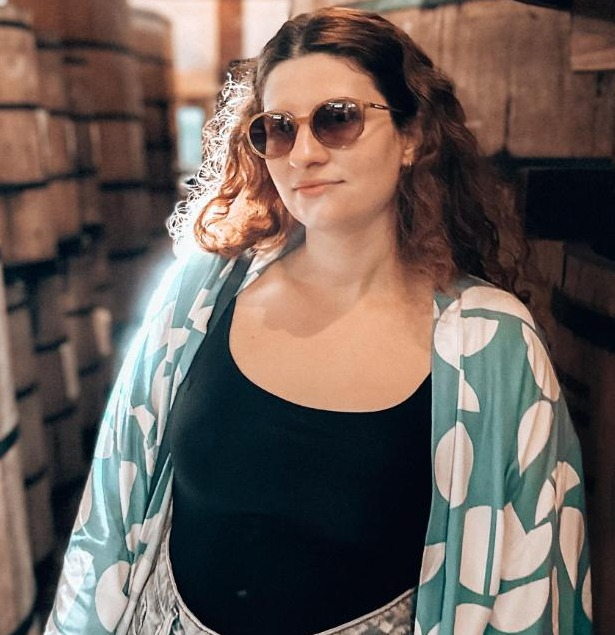

Camila Rolim

Sumary
I am a motivated and dedicated person with no experience in Web Development at the moment.
But I am trying to learn everything that I can and I hope to be prepared when the right opportunity comes my way.
Education
- Bachelor in Psychology, Federal University of Paraíba (2013 - 2019)
- Technologist in Systems Analysis and Development, Unipê Centro Universitário de João Pessoa (2022 - 2024)
Work Experience
- Mosh Digital — CRM
- Overseeing client communication with their audience through social media platforms.
- Clinical Psychologist
Languages
- Portuguese
- English
Other
Contact Me